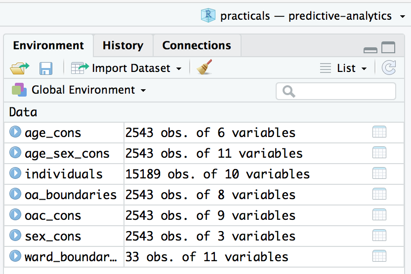
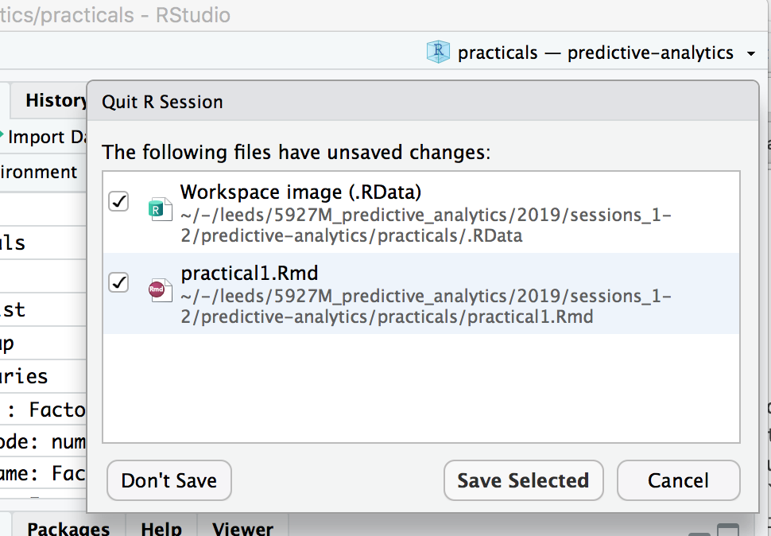

Practical 1 : simulating behaviour
The aim of this session is to create a synthetic population of households in Leeds. You will use an individual-level survey dataset describing individuals’ holiday-making behaviour and apply spatial microsimulation to estimate a population-level dataset of these holiday-making behaviours at the household-level in Leeds. In Practical 2, you will use this population to undertake a data analysis to support a targeted marketing strategy.
Task 0: Get familiar with R, RStudio and RMarkdown
If you have not done so already, read the page introducing R and RStudio.
RStudio has a helpful tutorial and a short video about R Markdown. Go through these short lessons: Introduction | How it Works | Code Chunks | Inline Code | Markdown Basics The R Markdown Reference Guide is also useful.
| Output Formats.
The practical assumes a prior understanding of R, developed through LUBS5308 Business Analytics and Decision Science and GEOG5917 Big Data and Consumer Analytics. In particular dplyr for data processing and shaping; and ggplot2 for charting. If you have little experience or confidence with R, then do not worry too much. All code required to complete the practical is provided in this document and the template. The assessment for this module tests ability to present a coherent data analysis, not your ability to code in R.
Task 1: Configure R and download the data
Task 1.1: Create an RMarkdown file
Create a new folder on your personal drive called predictive_analytics and generate a subfolder called practicals.
predictive_analytics
└── practicalsCreate a new RStudio Project by opening RStudio and selecting File > New Project... > Existing Directory, then browse to <your-drive>/predictive_analytics/practicals.
Create a new RMarkdown file by selecting File > New > New R Markdown..., click OK with the default options, then delete all the placeholder code/text in the new file.
Paste into your RMarkdown file the notes from this document, which contains an outline/skeleton of what you’ll need to complete the practical.
Save the file with an appropriate name (practical1). Your predictive_analytics/ directory should resemble thisNotice that when you create a new project, RStudio sets the root directory to that from which you created the project (enter getwd() to the R console). When you saved your newly created .Rmd document, you may have noticed that you were automatically routed to the practicals folder. You will find that this behaviour has many advantages, especially so as you begin to read and write data.
:
predictive_analytics
└── practicals
├── practical1.Rmd
└── practicals.RprojTask 1.2: Configure your R session
You will notice from the RMarkdown file that this practical depends on a number of R PackagesAn R package is a bundle of code, data and documentation, usually hosted centrally on the CRAN (Comprehensive R Archive Network). A particularly important set of packages is the tidyverse. Authored by Hadley Wickham and colleagues, these share common underlying philosophy, syntax and documentation.
.
Packages can be installed to your machine with install.packages(<package_name>). Note that you only need to use install.packages() if your machine does not already contain that package, or should you wish to update the installed version. library(<package-name>) makes a package’s functions directly available in an R session.
Below are the packages on which this practical depends. Note that if you are working from the lab machines, you do not need to download tidyverse or sf – instead you simply make these available to your R session with library(<package-name>).
# Bundle of packages for data manipulation.
# install.packages("tidyverse")
library(tidyverse)
# For working with geospatial data.
# install.packages("sf")
library(sf)
# For rescaling data.
# install.packages("scales")
# For performing microsimulation.
# install.packages("rakeR")
# Set default ggplot2 theme.
theme_set(theme_minimal())Task 1.3: Download and read in data
The next code block in your RMarkdown file gives instructions for downloading and reading in data. After download.file(<url>, <file-name>), and unzip(<filename>), your directory structure should look like this:
predictive_analytics
└── practicals
└── data
├── info
└── leeds_OAsYou will then execute code chunks that read in the datasets on which the practical depends, using read_csv() for reading in comma-separated text files, st_read() for reading in geospatial dataThere are some useful operations for working upon the spatial data here: setting the coordinate reference system with st_transform() and simplifying geometries using an implementation of the excellent mapshaper tool (with ms_simplify); and perform a spatial filter, filtering only wards contained within Leeds, using st_contains(), part of the sf library.
.
After running the code chunks in your RMarkdown file under the section Download and read in data, your RStudio Global Environment window should look like this
.
{kind=link}
Constraint data
All objects containing the _cons suffix are the constraint data. These have been downloaded from the 2011 Census and represent the characteristics of each household in Leeds. The individual-level characteristics relate to the Household Reference Person; the person that answers the Census questionnaire.
Inspect the sex_cons tibble by typing into your RConsole the code: View(sex_cons). A summary of the fields is below; age_cons and age_sex are similarly structured, except variables relate to age and age-and-sex respectively.
| var | detail |
|---|---|
oa_code |
geographic identifier for each Output Area in Leeds |
m |
number of male Household Reference Persons in the area |
f |
number of female Household Reference Persons in the area |
Inspect the oac_cons tibble in the same way: e.g. View(<tibble-name>). The variable names relate to the Output Area Classification (OAC) of each area. Because the geographic unit we are dealing with is Output Area, there is only one possible value for each row (OAC group membership is mutually exclusive).
Note that for each of these tables the total number of people in each area (each row sum) is the same in all constraint datasets.
Individual-level survey data
The individuals tibble is a sample of responses from a survey of holidaymakers who live in Leeds. All took a flight from a UK airport to an overseas airport. Inspect the data by typing View(individuals) into the R console. A summary of the fields is below – can you associate variables in this dataset with the Census derived constraint tables?
| var | detail |
|---|---|
person_id |
unique identifier for each person who responded to survey |
oa_grp |
output area classification for area in which respondent lives |
sex, age_band |
sex, age group of respondent |
household_income |
household income of respondent; note that a number of records are coded not answered |
overseas_airport |
the destination airport |
uk_airport |
the origin airport |
overall_holiday |
how satisfied the the respondent was with their holiday |
Geospatial data
Two datasets (oa_boundaries and ward_boundaries) are a special class of tibble. Enter class(<tibble-name>) into the console and you will notice that they are of class data.frame and sf. Browsing these tibbles with View(<tibble-name>) you will find that the final columns are labelled geometry: each cell contains a vector of coordinates describing the corresponding geographic areas (Output Area, OA, for oa_boundaries and Wards for ward_boundaries) . Other variables in this tibble identify: the OAC group (supergroup, group and subgroup) of the OA (for oa_boundaries) and the name, geographic area and centroid (for ward_boundaries).
You will use these datasets to generate maps of your synthetic population, both for supporting data analysis of your synthetic population data (in Practical 2) and reasoning over uncertainty in the synthetically generated data (in this practical).
Task 2: Generate synthetic population data
Task 2.1: Refactor variables and check for matches
You will now run a spatial microsimulation that assigns the individual level attributes from the individuals tibble to Leeds households characterised in the Census constraint files _cons. You will do so using the rakeR package, which provides functions for generating a spatial microsimulated dataset.
Run the code chunks in the section, Refactor variables and check for matches. Since the individuals dataset must be linked to the _cons data, you must first ensure that the variable names in _cons exactly match the unique levels in the individuals dataset. This is achieved by casting the individuals variables that are to be matched as factors, and then reordering them according to the variable order in the _cons data.Don’t worry if you found the last two sentences difficult to understand. It is nevertheless worth reading a little about factors as you will inevitably work with them as you develop as R programmers
Task 2.2: Generate the miscrosimulated data
The first code chunk in this section specifies the variables that will be used as constraints. In the example code, I’ve specified the oac_grp and age_sex constraints. You are free to specify a different set of constraints – you may find it instructive to explore different outcomes, e.g. different microsimulated data that result from differently specified constraints. Note that once the constraint variables are identified, we generate a single constraint tibble with inner_join()Enter ?inner_join() for documentation on this function: the datasets are by default joined on variables in the two datasets (oac_cons and age_sex_cons) with shared names, oa_code in this case.
.
Next: generate weights (using weight()). These can be thought of in a similar way to survey weights: they indicate the extent to which each respondent in the individual-level survey data (individuals) should be assigned to each OA when generating the microsimulated dataset. The resulting weights dataset contains pairs for each individual respondent and OA; as you would expect this is a sparse matrix containing many 0 values.
In order to generate the microsimulated dataset, it is necessary to move from these fractional weights to integer weights. Individuals must be cloned and assigned to OAs consisent with the constaints data – in a way that minimises the difference between the OA-level statistics given by the constraints and the aggregated results of the simulated individuals. Here Lovelace & Ballas’ (2013) ‘truncate, replicate, sample’ method is used to allocate cloned individuals to OAs; the procedure is abstracted into the rake() function. After running the code chunk (containing rake()), inspect the simulated dataset with glimpse<tibble-name>. You will notice that the simulated dataset contains c.320,600 observations – equal to the number of households in Leeds – and that the first variable in the dataset is person_id: each row represents a respondent from the individuals dataset allocated to an OA in Leeds (zone variable).
> glimpse(simulated_oac_age_sex)
Observations: 320,596
Variables: 4
$ person_id <int> 56, 63, 261, 306, 326, 348, 402, 495, 654, 709, 712, 831, 1000, 1030, 1250, 1447, 1532, 1587, 1754, …
$ oac_grp <fct> 8, 8, 8, 8, 8, 8, 8, 8, 8, 8, 8, 8, 8, 8, 8, 8, 8, 8, 8, 8, 8, 8, 8, 8, 8, 8, 8, 8, 8, 8, 8, 8, 8, 8…
$ age_sex <fct> m65over, f25to34, m25to34, m65over, m50to64, m25to34, m35to49, f65over, m50to64, m35to49, m65over, m…
$ zone <chr> "E00056750", "E00056750", "E00056750", "E00056750", "E00056750", "E00056750", "E00056750", "E0005675…Task 3: Explore uncertainty in the simulated dataset
Certain OAs in Leeds will be better represented by the individual-level survey datasets than others. OAs that are well-represented will contain only unique individuals (unique person_id); those OAs will also be characterised by generally low weights describing individuals (survey respondents) assigned. This can be evaluated visually be generating histograms and maps of summary statistics, calculated at the OA level, on the weight and simulated datasets.
Task 3.1: Generate OA-level summary statistics
The code chunk in this section generates a weights_summary dataset, whereby weights are grouped (group_by()) and summarised (summarise()) by OA, with 0 weights removed. Here, the mean(), max() and sd() of non-0 weights are calculated. These statistics tell us something about model uncertainty as they indicate the extent of oversampling – that is, instances where the same respondent is assigned to the same OA several times. This can also be investigated explicitly by calculating at the OA-level, the proportion of simulated households that are based on unique individuals.
Task 3.2: Plot OA-level summary statistics
The next code chunks generate histograms and choropleth maps of these summary statistics using the ggplot2 package: the visualization toolkit in R used across academia and industry in which graphics are specified declarativelyCheck out this post on the BBC’s use of ggplot2
. There will be more discussion on how to write ggplot2 specifications in the lab proper.
Notice that there is some spatial grouping of OAs in Leeds of areas that are less well represented by the individual-level survey data. We could explore this further by creating boxplots of these summary statistics by OAC supergroup to analyse these scores by different categories of area. This is instructive (below): Ethnicity Central and Cosmopolitans are not well represented by the individual-level survey data.
Task 4 Attach individual attributes to simulated data
A final activity this week is to perform a join on the simulated data and the attribute information contained in the individuals file.
Task 4.1: A quick look at at the original and simulated survey data
Inspecting the original individual-level survey data (individuals) and simulated data (simulated_oac_age_sex) with glimpse(<tibble-name>) shows that the simulated data does not yet contain all attributes collected from the survey. Only the variables that were used as constraints appear in the simulated dataset. This makes perfect sense given the way data are supplied to rakeR. Notice also that the simulated dataset contains a zone variable: individuals from the survey have been cloned and allocated to geographic zones, OAs in Leeds in this case, multiple times.
> glimpse(individuals)
Observations: 15,189
Variables: 10
$ person_id <int> 1, 2, 3, 4, 5, 6, 7, 8, 9, 10, 11, 12, 13, 14, 15, 16, 17…
$ oac_grp <fct> 4, 6, 4, 6, 5, 5, 7, 6, 5, 6, 5, 5, 5, 5, 5, 2, 2, 8, 6, …
$ sex <fct> f, m, f, m, f, f, f, f, m, m, f, f, m, m, m, f, f, f, f, …
$ age_band <fct> a24under, a25to34, a50to64, a50to64, a24under, a35to49, a…
$ number_children <int> 1, 0, 0, 0, 0, 0, 0, 2, 0, 0, 2, 2, 2, 2, 0, 0, 0, 0, 2, …
$ household_income <chr> "11-15K", "61-70K", "41-50K", "Not Answered", "Not Answer…
$ overseas_airport <chr> "TFS", "EFL", "JTR", "ALC", "TFS", "NBE", "NBE", "MAH", "…
$ uk_airport <chr> "MAN", "DSA", "MAN", "MAN", "MAN", "LBA", "MAN", "LBA", "…
$ satisfaction_overall <chr> "good", "fair", "fair", "excellent", "fair", "poor", "exc…
$ age_sex <fct> f24under, m25to34, f50to64, m50to64, f24under, f35to49, f…
> glimpse(simulated_oac_age_sex)
Observations: 320,596
Variables: 4
$ person_id <int> 56, 63, 261, 306, 326, 348, 402, 495, 654, 709, 712, 831, 1000, 1030…
$ oac_grp <fct> 8, 8, 8, 8, 8, 8, 8, 8, 8, 8, 8, 8, 8, 8, 8, 8, 8, 8, 8, 8, 8, 8, 8,…
$ age_sex <fct> m65over, f25to34, m25to34, m65over, m50to64, m25to34, m35to49, f65ov…
$ zone <chr> "E00056750", "E00056750", "E00056750", "E00056750", "E00056750", "E0…Task 4.2: Attach individual-level data with a dplyr join
You will attach the individual-level data using a dplyr join functionEnter ?dplyr::join into your R console for documentation on these functions
. This can be achieved with the code snippet below, which also appears in your .Rmd file. We take the simulated dataset (simulated_oac_age_sex) and inner_join() on the individuals data. By default dplyr join functions perform the join based on variable names that are shared between both datasets, person_id in this case.
> simulated_oac_age_sex <- simulated_oac_age_sex %>% select(person_id, zone) %>%
inner_join(individuals)
Joining, by = "person_id"
> glimpse(simulated_oac_age_sex)
Observations: 320,596
Variables: 11
$ person_id <int> 56, 63, 261, 306, 326, 348, 402, 495, 654, 709, 712, 831,…
$ zone <chr> "E00056750", "E00056750", "E00056750", "E00056750", "E000…
$ oac_grp <fct> 8, 8, 8, 8, 8, 8, 8, 8, 8, 8, 8, 8, 8, 8, 8, 8, 8, 8, 8, …
$ sex <fct> m, f, m, m, m, m, m, f, m, m, m, m, m, f, f, f, f, f, m, …
$ age_band <fct> a65over, a25to34, a25to34, a65over, a50to64, a25to34, a35…
$ number_children <int> 0, 2, 0, 0, 0, 2, 2, 0, 0, 2, 0, 0, 1, 0, 0, 2, 0, 0, 0, …
$ household_income <chr> "Not Answered", "26-30K", "26-30K", "Not Answered", "Not …
$ overseas_airport <chr> "PMI", "FAO", "CUN", "TFS", "PXO", "IBZ", "PMI", "DLM", "…
$ uk_airport <chr> "MAN", "LBA", "LBA", "MAN", "LBA", "LBA", "MAN", "LBA", "…
$ satisfaction_overall <chr> "poor", "fair", "poor", "excellent", "good", "poor", "poo…
$ age_sex <fct> m65over, f25to34, m25to34, m65over, m50to64, m25to34, m35…Most data wrangling type operations such as these are supported by functions that form the dplyr package. dplyr is within the family of packages that comprise the tidyverse: it shares a common underlying philosophy and syntax. If you enter ?dplyr, you will find that many of its functions have been named with verbs that neatly describe their purpose — filter(), select(), arrange(), group_by(), summarise() and more. The pipe (%>%) is a particularly handy operator that allows calls to these functions to be chained together; you might have noticed this being used throughout the practical.
End of practical
Well done for completing this week’s practical. You have successfully run a Spatial Microsimulation model and created a synthetic population of households in Leeds. You were exposed to a reasonable amount of code in the practical, and certainly a procedure that will be new to you (and takes a while to wrap your head around). If you could only simply reproduce the examples discussed in this document via the .Rmd file – and most of the code went over you head – don’t worry! During this practical and the next, you will be given all the code necessary to complete the module and Assignment 1.
Before you end the practical make make sure you save your work:
- Close your RStudio session by clicking on the red cross in the top left of the window.
- You will be asked to save the changes to the
.Rmdin which you enter code and discussion and a Workspace image with the extension.RData. The.RDatafile stores all data objects (tibbles,ValuesandFunctions) that you have created. Be sure to save both of these.